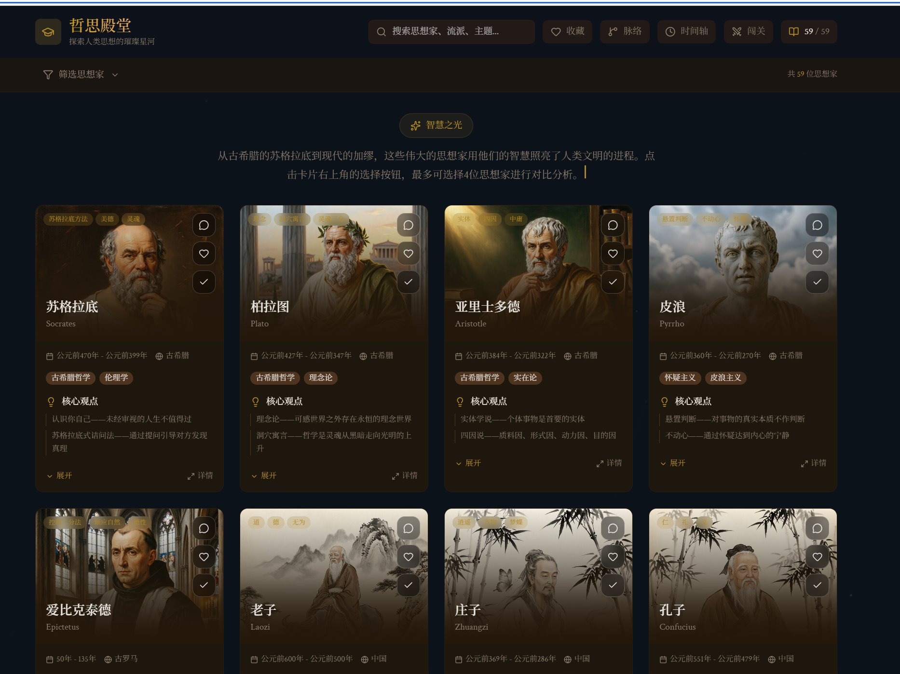
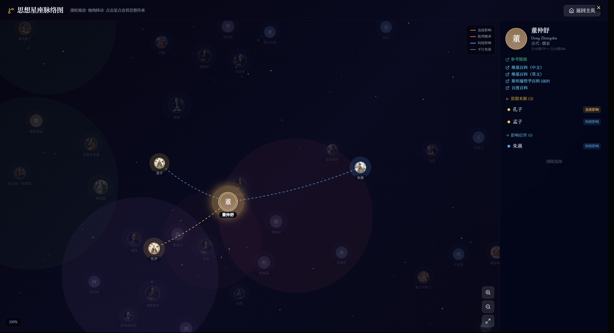
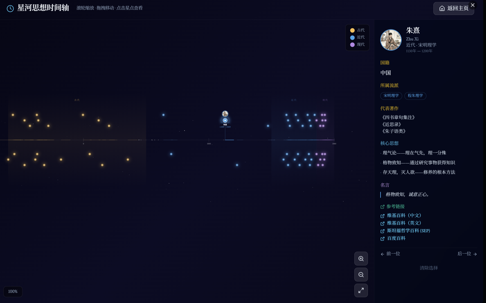
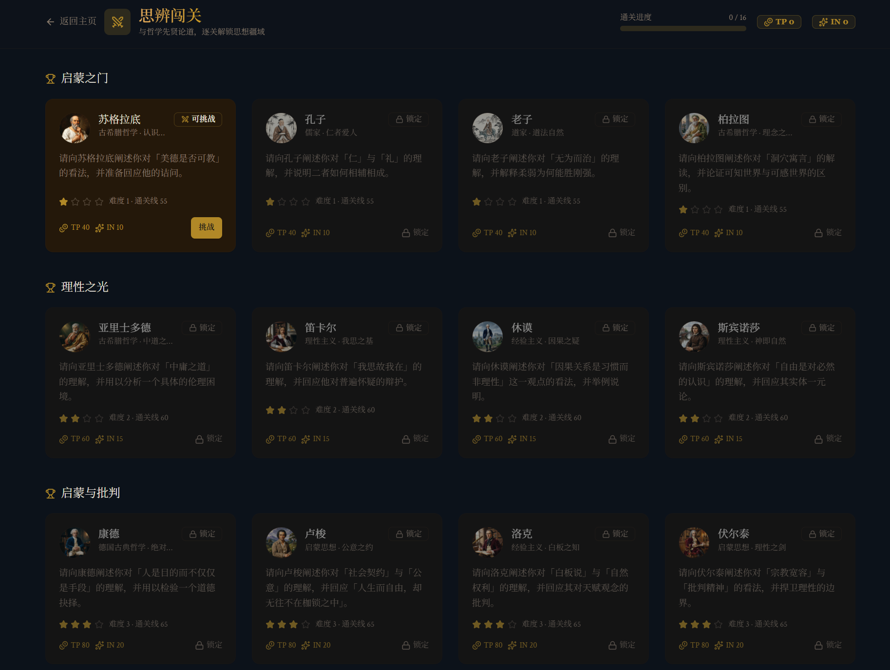
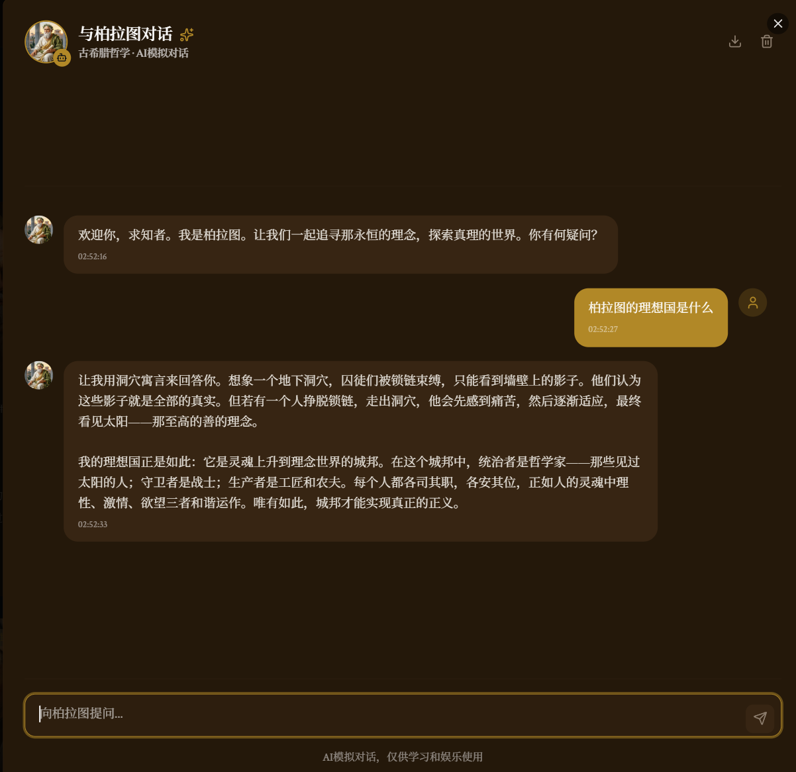

1. 哲思殿堂 · 首页
gallery-home.jpg
- 顶部搜索栏可按姓名实时检索 59 位思想家。
- 下方提供筛选（流派 / 时代）与视图切换。
- 卡片网格展示哲学家：苏格拉底、柏拉图、亚里士多德、皮浪、伊壁鸠鲁、老子、庄子、孔子等。
- 每张卡片含头像、姓名、流派与时代标签，点击进入详情。

2. 思想星座脉络图
influence-graph.png
- 节点—连线呈现思想家之间的师承与影响关系网络。
- 示例高亮「董仲舒」，连线指向受其影响或对其产生影响的思想家。
- 支持拖拽、缩放，点击节点查看关系详情。

3. 星河思想时间轴
timeline.png
- 按时间顺序横向铺开的「思想星河」，从古至今排列各家思想家。
- 示例定位「朱熹」，展示生卒年（1130–1200）、时代（宋）、主要贡献与关联人物。
- 可左右滚动浏览整条思想史时间线。

4. 思辨闯关 · PVE 关卡
pve-challenge.png
- 知识对战 PVE 玩法，以关卡推进，与历史人物「思辨对决」。
- 关卡以思想家命名：苏格拉底 → 孔子 → 老子 → 柏拉图 → 亚里士多德 → 笛卡尔 → 休谟 → 斯宾诺莎 → 康德 → 卢梭 → 洛克 → 伏尔泰。
- 每关显示难度、奖励积分与通关进度。

5. AI 模拟对话
ai-chat.png
- 进入思想家详情页后，可开启「AI 模拟对话」功能。
- 示例：与柏拉图对话，用户提问「柏拉图的理想国是什么」。
- AI 以柏拉图身份作答，结合洞穴寓言、理想城邦与灵魂三分学说进行回应。